Samba
Compartició de recursos amb Samba
Instal·lació i configuració de Samba
Samba és un servei que permet compartir carpetes i altres recursos com impressores dins una xarxa. Tot i que comparteix algunes similituds amb NFS, Samba destaca per la seva gestió d'autenticació basada en usuaris.
Diferències clau respecte a NFS
Una de les principals diferències entre Samba i NFS és la manera com gestionen l'autenticació: mentre que NFS la realitza a nivell de màquina, Samba la gestiona a nivell d'usuari, oferint un control més granular sobre els accessos.
Integració amb LDAP
Encara que no és imprescindible, Samba pot integrar-se amb LDAP per centralitzar la gestió d'usuaris i permisos.
Compatibilitat
Samba funciona tant en sistemes Linux com en Windows, permetent compartir recursos entre diferents plataformes de manera eficient.
Instal·lació i proves
Servidor Samba
Per instal·lar Samba, executem la comanda:
sudo apt install samba
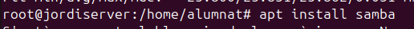
A continuació, creem una carpeta compartida i li assignem els permisos necessaris. En aquest cas, l'assignarem a nobody:nogroup amb permisos 777 per simplificar la configuració.
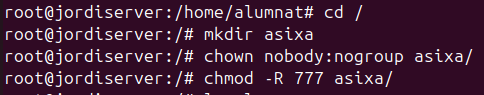
Un cop creat el directori, comprovem que els permisos s'han aplicat correctament.
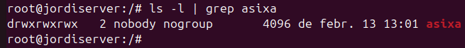
Configuració de smb.conf
Per definir el recurs compartit, editem el fitxer /etc/samba/smb.conf i afegim la configuració necessària.
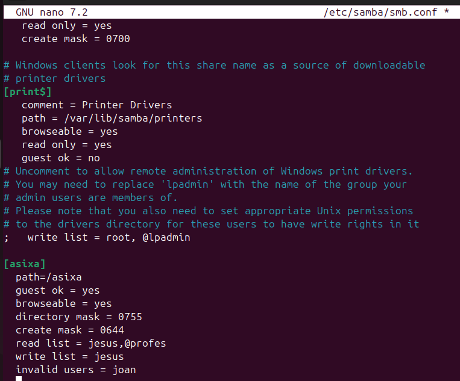
- Es defineix el directori compartit.
- S'especifica si l'accés anònim és permès.
- S'estableixen les màscares per a fitxers i directoris.
- Es configuren permisos d'accés per usuaris i grups.
Un cop editat el fitxer, reiniciem el servei per aplicar els canvis:
sudo systemctl restart smbd
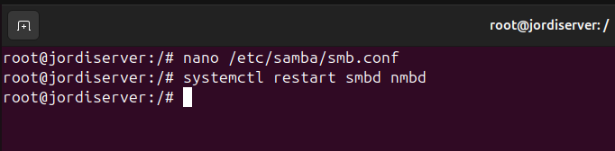
Gestó d'usuaris i permisos
Creació d'usuaris i grups
Per gestionar l'accés, cal crear els usuaris i assignar-los als grups corresponents.
Després de crear-los, verifiquem la seva assignació:
groups nom_usuari
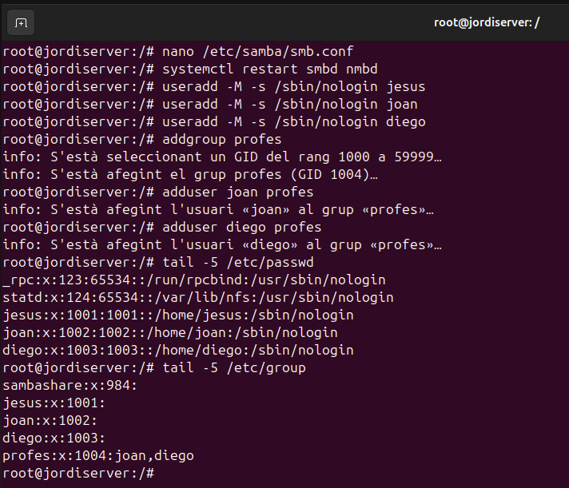
Assignació de contrasenya per a Samba
Perquè els usuaris puguin autenticar-se, cal establir una contrasenya específica per a Samba:
smbpasswd -a nom_usuari
Aquesta contrasenya és independent de la contrasenya del sistema.
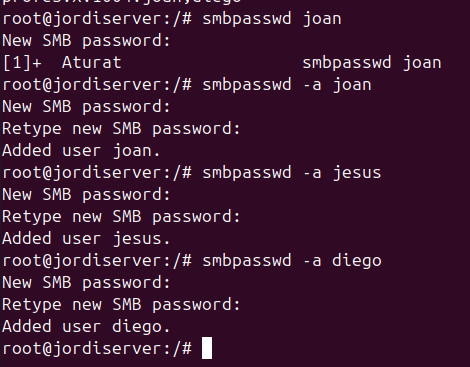
Configuració del client Samba
Instal·lació del client
Per accedir als recursos compartits, cal instal·lar el client Samba:
sudo apt install smbclient
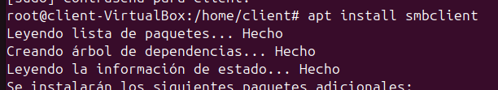
Un cop instal·lat, podem accedir al recurs compartit des del cercador de fitxers, indicant la IP del servidor Samba i el nom del recurs, per exemple:
smb://10.0.2.15/asixa/
Connexió com a usuari anònim
Si la configuració ho permet, es pot accedir com a usuari anònim. En aquest cas, només es poden veure els fitxers, però no modificar-los ni crear-ne de nous.
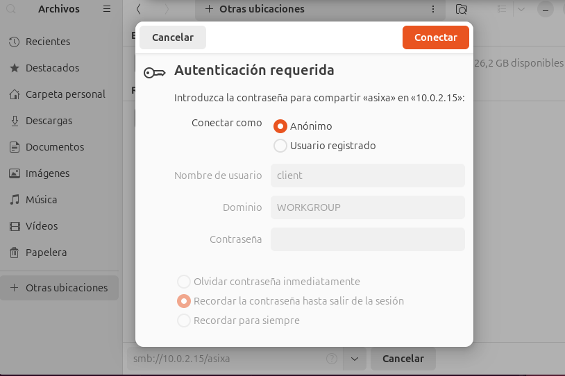
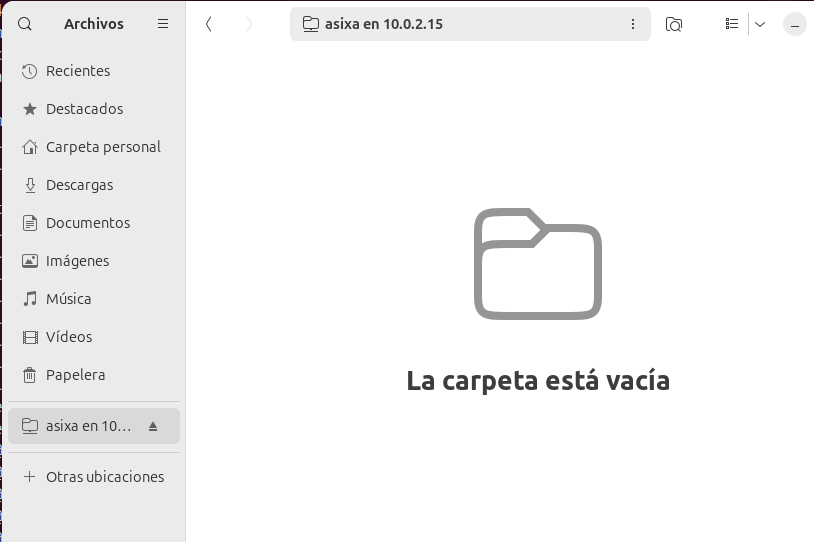
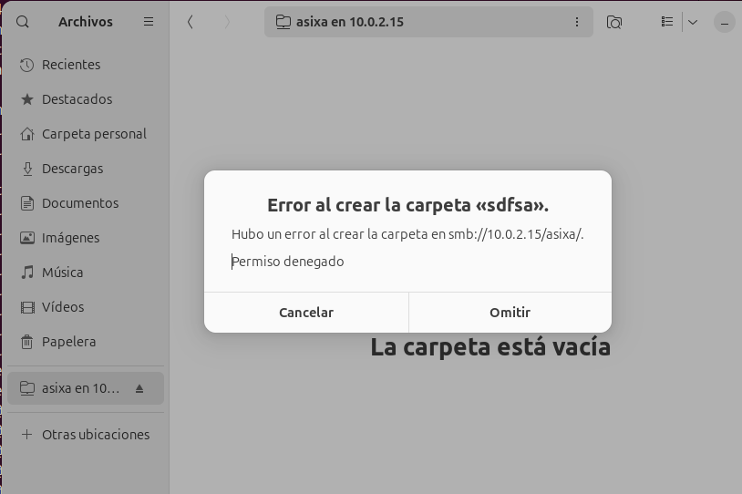
Si intentem crear o llegir certs fitxers sense els permisos necessaris, es generarà un error.
Connexió amb usuaris amb permisos
Usuari Jesus
L'usuari jesus pot llegir i escriure fitxers segons la configuració aplicada en smb.conf.
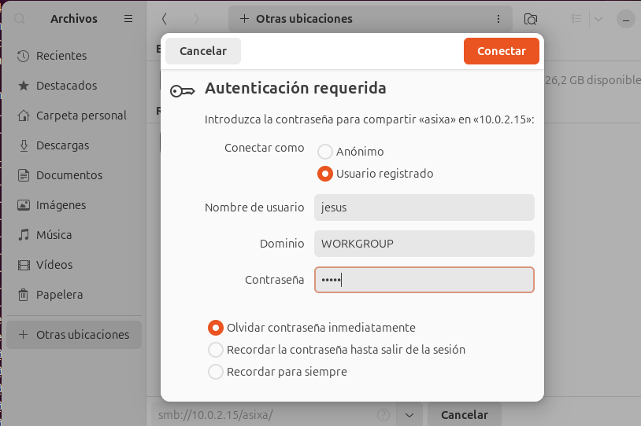
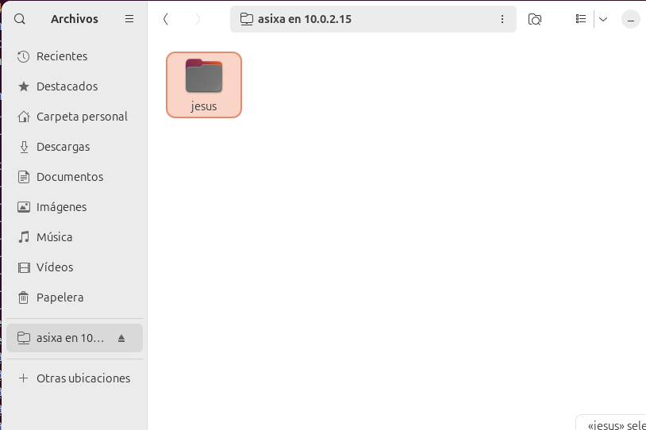
Usuari Diego
L'usuari diego té accés de lectura però no pot modificar ni crear nous fitxers.
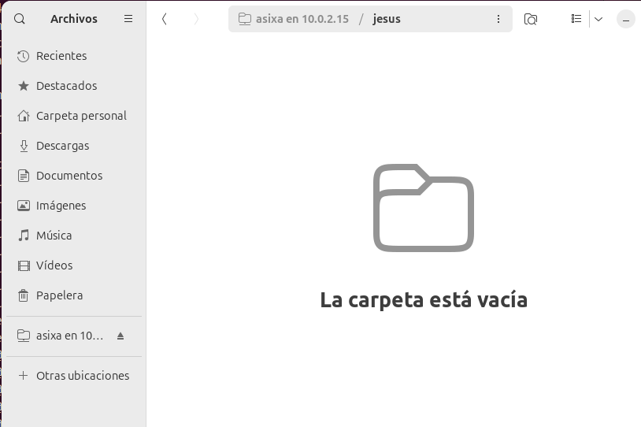
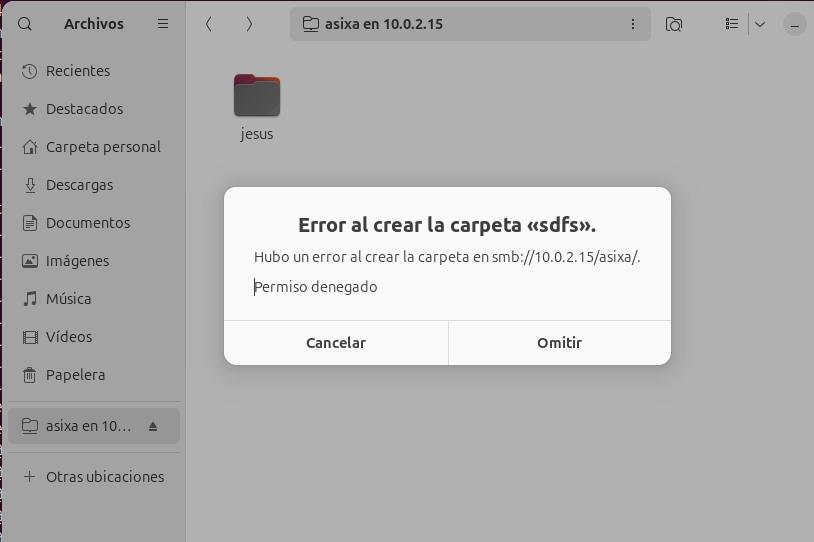
Usuari Joan
L'usuari joan no té permisos per accedir al recurs compartit.
ens tornara cap a fora
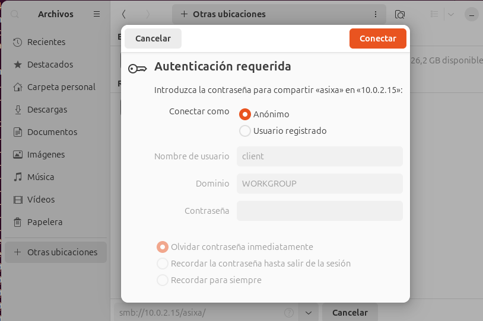
Integració amb LDAP
La integració de Samba amb LDAP pot resultar complexa, ja que requereix la configuració de samba.schema i diversos paràmetres addicionals. Una alternativa més senzilla és utilitzar Samba AD (Active Directory), que proporciona eines estandarditzades per a la gestió d'usuaris i permisos.